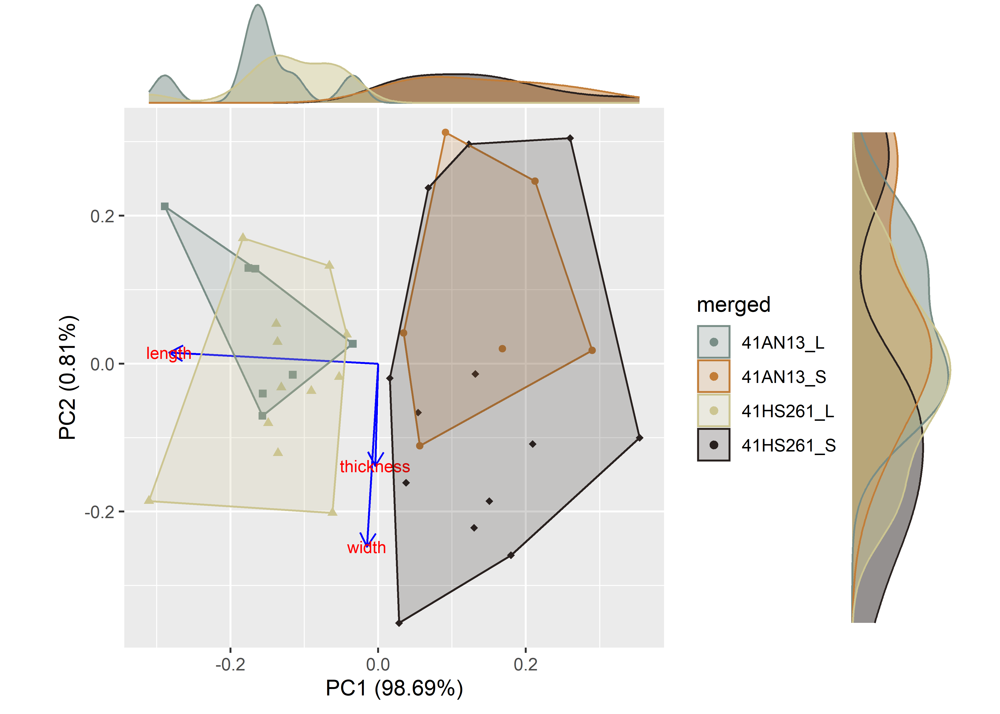

Chapter 1 Linear metrics by site
# install required analysis packages
#devtools::install_github("tidyverse/tidyverse")
#devtools::install_github("mlcollyer/RRPP")
#devtools::install_github("kassambara/ggpubr")
#devtools::install_github("sinhrks/ggfortify")
#devtools::install_git('https://bitbucket.org/nicholasehamilton/ggtern')
#devtools::install_github("karthik/wesanderson")
#devtools::install_github("daattali/ggExtra")
# load libraries
library(here)
library(tidyverse)
library(RRPP)
library(ggpubr)
library(ggfortify)
library(ggtern)
library(cluster)
library(wesanderson)
library(ggExtra)1.1 Load data + define L/S
# define subsets, assign L/S----
# load data
DATA <- read.csv("linear.csv",
header = TRUE,
as.is=TRUE)
#select vars
pre.data <- DATA %>%
select(spec:thickness)
# hs261 subset----
hs261 <- subset(pre.data,
site == "41HS261",
select = spec:thickness)
## histogram of max length
hist(hs261$length)
# calculate the mean length
meanl <- mean(hs261$length)
# assign L/S varieties based on mean length
lcheck2 <- hs261$length >= meanl
lcheck3 <- hs261$length >= 0 & hs261$length < meanl
hs261$size <- ""
hs261$size <- ifelse(lcheck2, "L", hs261$size)
hs261$size <- ifelse(lcheck3, "S", hs261$size)
# an13 subset----
an13 <- subset(pre.data,
site == "41AN13",
select = spec:thickness)
## histogram of max length
hist(an13$length)
# calculate the mean length
meanl <- mean(an13$length)
# assign L/S varieties based on mean length
lcheck2 <- an13$length >= meanl
lcheck3 <- an13$length >= 0 & an13$length < meanl
an13$size <- ""
an13$size <- ifelse(lcheck2, "L", an13$size)
an13$size <- ifelse(lcheck3, "S", an13$size)
# aggregate data
mx <- bind_rows(hs261, an13)
# join site and size class
qdata <- mx %>%
unite("merged", site, size, remove = FALSE)1.2 Boxplots for variable by site
# boxplot of maximum length ~ site
sitemaxl <- ggplot(qdata, aes(x = merged, y = length, color = merged)) +
geom_boxplot() +
geom_dotplot(binaxis = 'y', stackdir = 'center', dotsize = 0.3) +
scale_colour_manual(values = wes_palette("Moonrise2")) +
theme(legend.position = "none") +
labs(x = 'Site', y = 'MaxL')
# boxplot of maximum width ~ site
sitemaxw <- ggplot(qdata, aes(x = merged, y = width, color = merged)) +
geom_boxplot() +
geom_dotplot(binaxis = 'y', stackdir = 'center', dotsize = 0.3) +
scale_colour_manual(values = wes_palette("Moonrise2")) +
theme(legend.position = "none") +
labs(x = 'Site', y = 'MaxW')
# boxplot of maximum thickness ~ site
sitemaxth <- ggplot(qdata, aes(x = merged, y = thickness, color = merged)) +
geom_boxplot() +
geom_dotplot(binaxis = 'y', stackdir = 'center', dotsize = 0.3) +
scale_colour_manual(values = wes_palette("Moonrise2")) +
theme(legend.position = "none") +
labs(x = 'Site', y = 'MaxTh')
# render figure
sitefigure<-ggarrange(sitemaxl,sitemaxw,sitemaxth,
labels = c("a","b","c"),
ncol = 2, nrow = 2)## Bin width defaults to 1/30 of the range of the data. Pick better value with `binwidth`.
## Bin width defaults to 1/30 of the range of the data. Pick better value with `binwidth`.
## Bin width defaults to 1/30 of the range of the data. Pick better value with `binwidth`.# plot figure
sitefigure
Figure 1.1: Boxplots for maximum length, width, and thickness for Jowell knives from 41AN13 and 41HS261.
1.3 Principal Components Analysis for site
#attributes for plot
merged <- qdata$merged
df <- qdata[c(4:6)]
pch.gps.gp <- c(15:18)[as.factor(merged)]
#pca
pca <- autoplot(prcomp(df),
data = qdata,
asp = 1,
shape = pch.gps.gp,
colour = 'merged',
loadings = TRUE,
loadings.colour = 'blue',
loadings.label = TRUE,
loadings.label.size = 3,
frame = TRUE) +
scale_fill_manual(values = wes_palette("Moonrise2")) +
scale_colour_manual(values = wes_palette("Moonrise2"))
ggMarginal(pca, groupColour = TRUE, groupFill = TRUE)

Figure 1.2: Principal Components Analysis by site.
1.4 Analyses of Variance (ANOVA) for variable ~ site
1.4.1 Maximum length of Jowell knives
# anova = maximum length ~ site
siteml <- lm.rrpp(length ~ merged,
SS.type = "I",
data = qdata,
iter = 9999,
print.progress = FALSE)
# difference in max length by size class?
anova(siteml)##
## Analysis of Variance, using Residual Randomization
## Permutation procedure: Randomization of null model residuals
## Number of permutations: 10000
## Estimation method: Ordinary Least Squares
## Sums of Squares and Cross-products: Type I
## Effect sizes (Z) based on F distributions
##
## Df SS MS Rsq F Z Pr(>F)
## merged 3 3909.6 1303.21 0.73264 31.056 6.6864 1e-04 ***
## Residuals 34 1426.8 41.96 0.26736
## Total 37 5336.4
## ---
## Signif. codes: 0 '***' 0.001 '**' 0.01 '*' 0.05 '.' 0.1 ' ' 1
##
## Call: lm.rrpp(f1 = length ~ merged, iter = 9999, SS.type = "I", data = qdata,
## print.progress = FALSE)# pairwise comparison of LS means = which differ?
sh.pwml <- pairwise(siteml,
groups = qdata$merged)
summary(sh.pwml,
confidence = 0.95,
test.type = "dist")##
## Pairwise comparisons
##
## Groups: 41AN13_L 41AN13_S 41HS261_L 41HS261_S
##
## RRPP: 10000 permutations
##
## LS means:
## Vectors hidden (use show.vectors = TRUE to view)
##
## Pairwise distances between means, plus statistics
## d UCL (95%) Z Pr > d
## 41AN13_L:41AN13_S 22.0785714 12.989750 2.7048557 0.0004
## 41AN13_L:41HS261_L 2.3327381 11.155345 -0.5160828 0.6886
## 41AN13_L:41HS261_S 21.5162637 11.006445 3.0235298 0.0001
## 41AN13_S:41HS261_L 19.7458333 11.823750 2.6473327 0.0004
## 41AN13_S:41HS261_S 0.5623077 11.618917 -1.5460158 0.9263
## 41HS261_L:41HS261_S 19.1835256 9.342731 3.1528869 0.00011.4.2 Maximum width of Jowell knives
# anova = maximum width ~ site
sitemw <- lm.rrpp(width ~ merged,
SS.type = "I",
data = qdata,
iter = 9999,
print.progress = FALSE)
anova(sitemw)##
## Analysis of Variance, using Residual Randomization
## Permutation procedure: Randomization of null model residuals
## Number of permutations: 10000
## Estimation method: Ordinary Least Squares
## Sums of Squares and Cross-products: Type I
## Effect sizes (Z) based on F distributions
##
## Df SS MS Rsq F Z Pr(>F)
## merged 3 9.902 3.3008 0.17992 2.4865 1.4114 0.0799 .
## Residuals 34 45.134 1.3275 0.82008
## Total 37 55.037
## ---
## Signif. codes: 0 '***' 0.001 '**' 0.01 '*' 0.05 '.' 0.1 ' ' 1
##
## Call: lm.rrpp(f1 = width ~ merged, iter = 9999, SS.type = "I", data = qdata,
## print.progress = FALSE)1.4.3 Maximum thickness of Jowell knives
# anova = maximum thickness ~ site
sitemth <- lm.rrpp(thickness ~ merged,
SS.type = "I",
data = qdata,
iter = 9999,
print.progress = FALSE)
# difference in max thickness by size class?
anova(sitemth)##
## Analysis of Variance, using Residual Randomization
## Permutation procedure: Randomization of null model residuals
## Number of permutations: 10000
## Estimation method: Ordinary Least Squares
## Sums of Squares and Cross-products: Type I
## Effect sizes (Z) based on F distributions
##
## Df SS MS Rsq F Z Pr(>F)
## merged 3 16.092 5.3642 0.50036 11.35 3.9965 1e-04 ***
## Residuals 34 16.069 0.4726 0.49964
## Total 37 32.162
## ---
## Signif. codes: 0 '***' 0.001 '**' 0.01 '*' 0.05 '.' 0.1 ' ' 1
##
## Call: lm.rrpp(f1 = thickness ~ merged, iter = 9999, SS.type = "I",
## data = qdata, print.progress = FALSE)# pairwise comparison of LS means = which differ?
sh.pwmth <- pairwise(sitemth,
groups = qdata$merged)
summary(sh.pwmth,
confidence = 0.95,
test.type = "dist")##
## Pairwise comparisons
##
## Groups: 41AN13_L 41AN13_S 41HS261_L 41HS261_S
##
## RRPP: 10000 permutations
##
## LS means:
## Vectors hidden (use show.vectors = TRUE to view)
##
## Pairwise distances between means, plus statistics
## d UCL (95%) Z Pr > d
## 41AN13_L:41AN13_S 0.2571429 1.0145238 -0.3271927 0.6291
## 41AN13_L:41HS261_L 1.4345238 0.8578810 2.6416538 0.0011
## 41AN13_L:41HS261_S 0.9374725 0.8527857 1.7651662 0.0307
## 41AN13_S:41HS261_L 1.6916667 0.9183333 2.8854375 0.0001
## 41AN13_S:41HS261_S 1.1946154 0.9027756 2.1472914 0.0076
## 41HS261_L:41HS261_S 0.4970513 0.7220577 0.9392420 0.1857